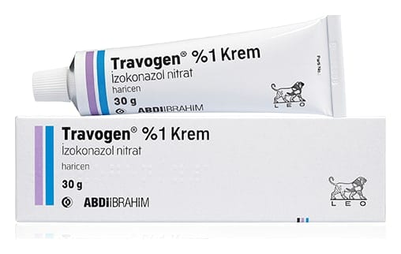

Travogen %1 Krem, 60 g

Ne için kullanılır
KT · Bölüm 1TRAVOGEN’in 1 g’ı 10 mg izokonazol nitrat içerir. İzokonazol nitrat, imidazol grubu olarak bilinen ve derinin mantar tedavisinde haricen kullanılan ilaçların bir üyesidir. TRAVOGEN 30 g ve 60 g‘lık ambalajlarda bulunmaktadır.
TRAVOGEN, el, ayak parmak araları, kasık bölgesi, genital bölgedeki mantar hastalıkları gibi derinin yüzeysel mantar hastalıklarının tedavisinde ve eritrazmada (belirli bir bakteri grubunun neden olduğu deri iltihabı) kullanılır.